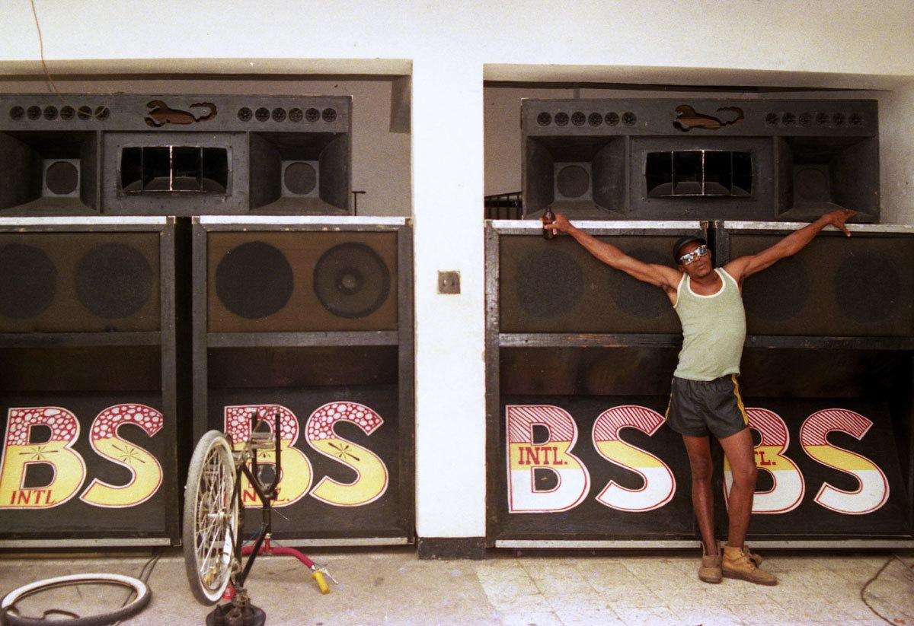
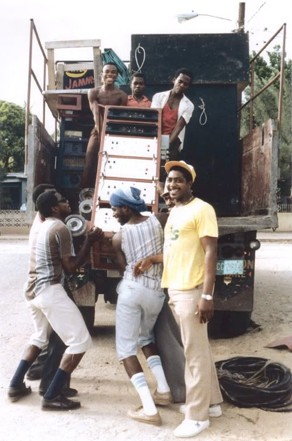
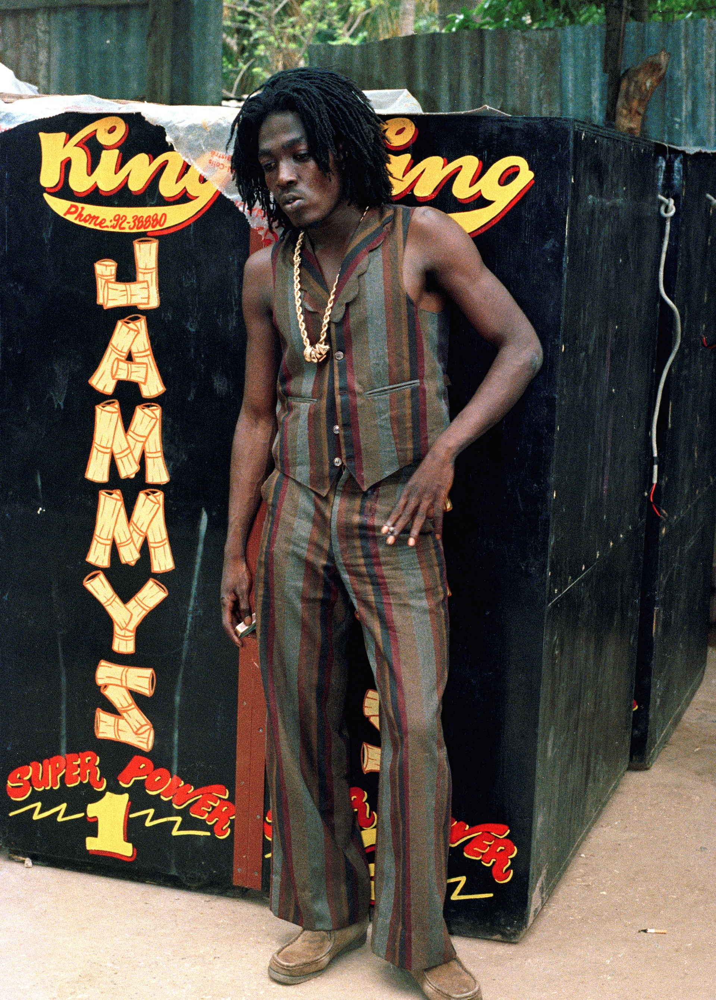

Dancehall is named after Jamaican dance halls in which popular Jamaican recordings were played by local sound systems. They began in the late 1940s among people from the inner city of Kingston such as Trench Town, Rose Town and Denham Town, Jamaicans who were not able to participate in dances uptown.


